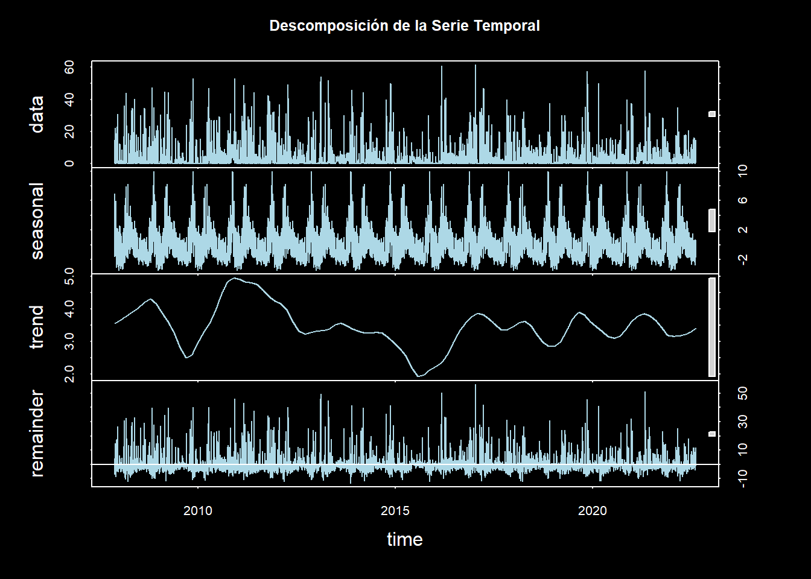

Sección 2 Análisis Exploratorio
La estación ha estado operando de manera continua desde el 15 de agosto de 1965. No obstante, como es común en este tipo de datos, pueden presentarse períodos en los que los instrumentos de medición fallen o presenten anomalías operativas. Estos fallos pueden generar periodos de ausencia de datos, lo cual es una limitación que debe ser considerada en el análisis. La existencia de datos faltantes es, por tanto, un aspecto fundamental que requiere ser evaluado y tratado adecuadamente en la fase de análisis exploratorio.
2.1 Datos Faltantes
A continuación, se presentará el proceso realizado para identificar y tratar los datos faltantes en la serie temporal de precipitación diaria. El primer paso consiste en la preparación y filtrado de los datos para asegurar que solo se mantengan las variables de interés, en este caso, la fecha y el valor de precipitación diaria medida en milímetros.
Para asegurar que el formato de la columna Fecha es adecuado para el análisis temporal, se ha convertido esta variable a un formato de fecha estándar. Además, se ha generado una secuencia completa de fechas que cubre todo el rango temporal de los datos disponibles, desde la fecha mínima hasta la máxima. Este paso es crucial, ya que el dataframe original no contiene registros para las fechas no reportadas, lo cual es esencial para observar y analizar los rangos de tiempo en los que los datos están ausentes.
Code
# Asegurarse de que la columna Fecha esté en formato de fecha
df$Fecha <- as.Date(df$Fecha)
# 1. Crear una secuencia completa de fechas
fecha_completa <- seq(min(df$Fecha), max(df$Fecha), by = "day")
# 2. Unir con los datos originales
df_completo <- data.frame(Fecha = fecha_completa) %>%
left_join(df, by = "Fecha")Una vez completada la secuencia de fechas, se identificaron los períodos en los que los datos de precipitación están ausentes.
Code
# 3. Identificar rangos de datos faltantes
df_completo$es_faltante <- is.na(df_completo$Valor)
rangos_faltantes <- rle(df_completo$es_faltante)
inicio_faltantes <- cumsum(c(1, rangos_faltantes$lengths[-length(rangos_faltantes$lengths)]))
fin_faltantes <- cumsum(rangos_faltantes$lengths)
rangos <- data.frame(
inicio = df_completo$Fecha[inicio_faltantes[rangos_faltantes$values]],
fin = df_completo$Fecha[fin_faltantes[rangos_faltantes$values]],
duracion = rangos_faltantes$lengths[rangos_faltantes$values]
) %>% filter(duracion > 0)
# 5. Imprimir resultados
datatable(rangos,
options = list(pageLength = 10,
lengthMenu = c(5, 10, 25, 50),
scrollX = TRUE),
filter = 'top',
rownames = FALSE) %>%
formatDate('inicio', method = 'toLocaleDateString') %>%
formatDate('fin', method = 'toLocaleDateString')A partir del análisis de los rangos de datos faltantes, se observó que existen 218 intervalos con datos ausentes. Para entender mejor la distribución de estos intervalos, se realizó una visualización temporal de los datos faltantes.
Code
# 6. Visualización de datos faltantes
ggplot(df_completo, aes(x = Fecha, y = 1)) +
geom_point(aes(color = es_faltante), shape = 15, size = 3, alpha = 0.8) +
scale_color_manual(values = c("FALSE" = "lightgreen", "TRUE" = "tomato"), # Colores claros y brillantes
labels = c("Presente", "Faltante")) +
scale_x_date(date_breaks = "3 year", date_labels = "%Y") + # Etiquetas cada 3 años
theme_minimal() +
labs(title = "Visualización de Datos Faltantes",
x = "Fecha", y = "", color = "Estado del Dato") +
theme(
plot.background = element_rect(fill = "black", color = NA), # Fondo oscuro
panel.background = element_rect(fill = "black"), # Fondo del panel oscuro
plot.title = element_text(hjust = 0.5, size = 16, face = "bold", color = "white"),
axis.text.x = element_text(angle = 45, hjust = 1, size = 10, color = "white"),
axis.text.y = element_blank(), # Eliminar texto del eje y
axis.ticks.y = element_blank(), # Eliminar ticks del eje y
legend.position = "top",
legend.text = element_text(color = "white"), # Texto blanco para la leyenda
legend.title = element_text(color = "white"), # Título blanco para la leyenda
panel.grid.major = element_line(color = "gray"), # Cuadrícula gris tenue
panel.grid.minor = element_blank() # Eliminar cuadrícula menor
)En el gráfico anterior, es evidente que existen períodos prolongados de datos faltantes. Para profundizar en este aspecto, se identificó el intervalo más largo de datos ausentes y se determinó su duración.
Code
## inicio fin duracion
## 1 2005-08-29 2007-11-21 815Se ha identificado un intervalo de 815 días sin datos, lo que corresponde a un período superior a dos años. Este hallazgo plantea un desafío significativo, ya que los períodos de datos faltantes tan extensos podrían introducir sesgos o distorsiones en el análisis, afectando tanto la calidad de los modelos como la validez de las conclusiones. Este intervalo de datos ausentes podría dificultar la identificación de patrones temporales consistentes y alterar las predicciones que se obtengan de los modelos basados en series temporales.
Dado lo anterior, se justifica la decisión de iniciar el análisis a partir del 22 de noviembre de 2007, una fecha posterior a este intervalo de datos faltantes. Al excluir los datos previos a esta fecha, se asegura la integridad temporal de la serie, garantizando que los modelos y las conclusiones se basen en un conjunto de datos con menor cantidad de lagunas temporales. Esto no solo mejora la coherencia de las observaciones, sino que también optimiza la capacidad de los modelos de aprendizaje automático para capturar patrones de comportamiento en los datos. En definitiva, esta selección busca minimizar el impacto de los largos períodos sin datos y maximizar la robustez de los análisis posteriores.
A continuación, se realiza el filtrado de los datos a partir de esta fecha clave para continuar con el análisis sin los períodos de datos faltantes anteriores. La operación se ejecuta de la siguiente manera:
Code
## Fecha Valor es_faltante
## 1 2007-11-22 14.8 FALSE
## 2 2007-11-23 0.3 FALSE
## 3 2007-11-24 0.8 FALSE
## 4 2007-11-25 0.5 FALSE
## 5 2007-11-26 0.1 FALSE
## 6 2007-11-27 0.4 FALSEUna vez realizados los ajustes en la serie temporal, se vuelve a evaluar la presencia de datos faltantes en el nuevo conjunto. Se identifican los rangos de fechas donde faltan datos, lo cual es esencial para determinar si es necesario proceder con una imputación.
Code
# 3. Identificar rangos de datos faltantes en el dataframe filtrado
df_filtrado$es_faltante <- is.na(df_filtrado$Valor)
rangos_faltantes <- rle(df_filtrado$es_faltante)
inicio_faltantes <- cumsum(c(1, rangos_faltantes$lengths[-length(rangos_faltantes$lengths)]))
fin_faltantes <- cumsum(rangos_faltantes$lengths)
rangos <- data.frame(
inicio = df_filtrado$Fecha[inicio_faltantes[rangos_faltantes$values]],
fin = df_filtrado$Fecha[fin_faltantes[rangos_faltantes$values]],
duracion = rangos_faltantes$lengths[rangos_faltantes$values]
) %>% filter(duracion > 0)
# Filtrar el dataframe para obtener la fila donde la duración es máxima
fila_maxima <- rangos %>% filter(duracion == max(duracion))
fila_maxima## inicio fin duracion
## 1 2013-07-01 2013-07-31 31
## 2 2013-10-01 2013-10-31 31El análisis de los datos revela que los períodos de ausencias de datos más prolongados en el conjunto filtrado no exceden los 31 días (aproximadamente un mes), lo que facilita significativamente su imputación en comparación con los intervalos de más de dos años que se observaban en el conjunto de datos anterior. Esta reducción en la longitud de los períodos faltantes ofrece una ventaja considerable para los métodos de imputación, ya que se puede trabajar con ventanas de tiempo más cortas y coherentes.
Para abordar la imputación de los datos faltantes, se optó por utilizar el valor promedio de la precipitación en el mismo día a lo largo de los años en los que se dispone de información, con el fin de mantener la estacionalidad de la serie temporal y asegurar que la imputación refleje las variaciones históricas típicas. A continuación se muestra el procedimiento implementado:
Code
df_filtrado <- df_filtrado %>%
mutate(
Año = year(Fecha),
DiadelAño = yday(Fecha)
)
# Función para imputar usando el promedio del mismo día en otros años
imputar_estacional <- function(x) {
df_imputacion <- df_filtrado %>%
group_by(DiadelAño) %>%
summarise(ValorPromedio = mean(Valor, na.rm = TRUE))
x_imputado <- x
for (i in which(is.na(x))) {
dia_del_año <- yday(df_filtrado$Fecha[i])
x_imputado[i] <- df_imputacion$ValorPromedio[df_imputacion$DiadelAño == dia_del_año]
}
return(x_imputado)
}
# Aplicar la imputación
df_filtrado$ValorImputado <- imputar_estacional(df_filtrado$Valor)Con los datos imputados y completos, ya contamos con la información necesaria para proceder al análisis detallado de la serie temporal, lo que nos permitirá identificar patrones, tendencias y realizar proyecciones precisas sobre la precipitación en la estación estudiada.
2.2 Análisis de la Serie Temporal
Code
# Crear una serie temporal
ts_lluvia <- ts(df_filtrado$ValorImputado, frequency = 365,
start = c(year(min(df_filtrado$Fecha)), yday(min(df_filtrado$Fecha))))
# 1. Gráfico de la serie temporal original
par(bg = "black", col.axis = "white", col.lab = "white", col.main = "white", fg = "white")
plot(ts_lluvia, main = "Serie Temporal de Precipitación Diaria",
ylab = "Precipitación (mm)", xlab = "Año",
col = "lightblue")La serie temporal de precipitación diaria muestra una marcada variabilidad, con valores que oscilan entre 0 y 60 mm. Ocasionalmente, se observan picos que superan los 50 mm, evidenciando la ocurrencia de eventos extremos de precipitación. Hacia los años más recientes, en particular el 2020, se aprecia una ligera tendencia hacia la disminución en la intensidad de las precipitaciones.
Code
# 2. Promedio Móvil
# Calcular promedio móvil de 30 días
ma_30 <- rollmean(ts_lluvia, k = 30, fill = NA)
# Gráfico del promedio móvil
par(bg = "black", col.axis = "white", col.lab = "white", col.main = "white", fg = "white")
plot(ts_lluvia, main = "Serie Temporal con Promedio Móvil de 30 días",
ylab = "Precipitación (mm)", xlab = "Año",
col = "lightblue")
lines(ma_30, col = "red", lwd = 2)
legend("topright", legend = c("Original", "Promedio Móvil 30 días"),
col = c("lightblue", "red"), lty = 1, bg = "black", text.col = "white")El promedio móvil de 30 días, representado por la línea roja, resalta patrones estacionales más claros que no se perciben fácilmente en los datos diarios. Se observan ciclos regulares de períodos de mayor y menor precipitación a lo largo de cada año. Esta suavización de los datos permite identificar más fácilmente los períodos húmedos, representados por picos, y los secos, que aparecen como valles. Cabe destacar que los picos más altos ocurren en intervalos de tiempo similares cada año.
Code
El análisis de autocorrelación revela una fuerte correlación en los primeros rezagos, la cual disminuye rápidamente con el tiempo. Esto sugiere que la precipitación de un día está relacionada principalmente con la de los días inmediatamente anteriores. La función de autocorrelación parcial (PACF) destaca que las correlaciones significativas se limitan a los primeros rezagos, lo que indica que un modelo autorregresivo de bajo orden podría ser adecuado para modelar la serie de precipitaciones.
Code
 La descomposición de la serie temporal muestra los componentes subyacentes de los datos. El componente estacional presenta un patrón claro y consistente que se repite cada año. La tendencia a largo plazo evidencia fluctuaciones suaves, con una ligera disminución en la intensidad de las precipitaciones hacia 2015, seguida de una posterior estabilización. Finalmente, los residuos reflejan que la variabilidad no explicada por los componentes de tendencia y estacionalidad es relativamente constante.
Code
# Convertir ts_lluvia a un data frame
df <- data.frame(
fecha = seq(from = as.Date("2007-11-22"), by = "day", length.out = length(ts_lluvia)),
precipitacion = as.vector(ts_lluvia)
)
# Añadir columnas de año y día del año
df$año <- year(df$fecha)
df$dia_del_año <- yday(df$fecha)
# Filtrar los últimos 5 años completos
años_recientes <- tail(unique(df$año[df$año < max(df$año)]), 5)
df_filtrado <- df[df$año %in% años_recientes,]
# Crear el gráfico
ggplot(df_filtrado, aes(x = dia_del_año, y = precipitacion, color = factor(año))) +
geom_line(alpha = 0.7) +
scale_x_continuous(breaks = c(1, 91, 182, 274, 365),
labels = c("Ene", "Abr", "Jul", "Oct", "Dic")) +
scale_color_viridis_d(option = "plasma", end = 0.8) +
labs(title = "Precipitación Diaria (Últimos 5 Años Completos)",
x = "Mes",
y = "Precipitación (mm)",
color = "Año") +
theme_minimal() +
theme(
plot.background = element_rect(fill = "black", color = NA),
panel.background = element_rect(fill = "black", color = NA),
text = element_text(color = "white"),
axis.text = element_text(color = "white"),
axis.title = element_text(color = "white"),
legend.background = element_rect(fill = "black", color = NA),
legend.text = element_text(color = "white"),
legend.title = element_text(color = "white"),
panel.grid.major = element_line(color = "grey30"),
panel.grid.minor = element_line(color = "grey20")
)La visualización comparativa de los últimos 5 años (2017-2021) permite observar patrones interanuales en la precipitación diaria. Se destaca que los eventos de precipitación más intensos (superiores a 40 mm) ocurren principalmente en los períodos de enero-abril y octubre-diciembre. Es notable cómo los patrones de lluvia se repiten de manera similar año tras año, aunque con variaciones en su intensidad. Los meses de julio y agosto consistentemente muestran menor frecuencia e intensidad de precipitaciones, indicando una estación seca bien definida. Los eventos extremos de precipitación (picos que superan los 50 mm) se presentan de manera esporádica y no siguen un patrón temporal específico, lo que sugiere que son eventos extraordinarios más que parte del ciclo estacional normal.
Code
# 6. Boxplot mensual para visualizar patrones estacionales
df_filtrado$Mes <- month(df_filtrado$fecha)
ggplot(df_filtrado, aes(x = factor(Mes), y = precipitacion)) +
geom_boxplot(fill = "lightblue", color = "white", outlier.shape = 16, outlier.colour = "red", outlier.size = 2) +
labs(title = "Distribución Mensual de Precipitación", x = "Mes", y = "Precipitación (mm)") +
scale_x_discrete(labels = month.abb) +
theme_dark() +
theme(
panel.background = element_rect(fill = "black"), # Forzar fondo negro
plot.background = element_rect(fill = "black"), # Forzar fondo negro del área completa
panel.grid.major = element_line(color = "grey30"),
panel.grid.minor = element_line(color = "grey20"),
plot.title = element_text(color = "white", size = 16, face = "bold"),
axis.text = element_text(color = "white"),
axis.title = element_text(color = "white"),
legend.position = "none"
)El diagrama de cajas (boxplot) de la distribución mensual de precipitación revela la estructura estacional de las lluvias en la región. Los meses de noviembre y abril presentan las medianas más altas, así como mayor variabilidad en la cantidad de precipitación, como se evidencia por el tamaño de las cajas y la distribución de los puntos atípicos (outliers). Se observa una distribución bimodal clara, con dos períodos de mayor precipitación: el primero durante marzo-abril y el segundo durante octubre-noviembre. Los meses de julio, agosto y septiembre muestran las menores precipitaciones del año, con cajas más compactas que indican menor variabilidad. Los puntos rojos por encima de las cajas representan eventos extremos de precipitación, siendo más frecuentes durante los meses lluviosos, lo cual es consistente con el comportamiento climático típico de regiones tropicales con estaciones húmedas bien definidas.
2.3 Análisis de Resultados
A partir del análisis exploratorio realizado sobre la serie temporal de precipitación, se han identificado patrones significativos que caracterizan el comportamiento pluviométrico de la estación. El primer aspecto relevante corresponde a la calidad y preparación de los datos, donde se identificó un período significativo de datos faltantes de 815 días previo a 2007, lo que llevó a la decisión metodológica de iniciar el análisis a partir del 22 de noviembre de 2007. Los datos faltantes posteriores fueron tratados mediante un proceso de imputación basado en promedios estacionales, lo que permitió mantener la integridad y coherencia de la serie temporal.
El análisis de la serie temporal revela una marcada variabilidad en las precipitaciones diarias, con valores que oscilan entre 0 y 60 milímetros. Se destaca una tendencia sutil hacia la disminución en la intensidad de las precipitaciones hacia el año 2020, aunque este patrón requeriría un análisis más prolongado para confirmar su persistencia. La estructura de autocorrelación de la serie sugiere una fuerte dependencia temporal a corto plazo, indicando que los patrones de precipitación están significativamente influenciados por las condiciones de los días inmediatamente anteriores.
Un hallazgo fundamental del análisis es la identificación de un patrón bimodal claramente definido en el régimen de precipitaciones. Este patrón se caracteriza por dos períodos húmedos principales: el primero durante marzo-abril y el segundo durante octubre-noviembre. Los meses de noviembre y abril consistentemente presentan las medianas más altas de precipitación, así como una mayor variabilidad en la cantidad de lluvia registrada. En contraste, se observa una estación seca bien definida durante los meses de julio, agosto y septiembre, caracterizada por precipitaciones mínimas y menor variabilidad.
La presencia de eventos extremos de precipitación, definidos como aquellos que superan los 50 milímetros diarios, muestra una distribución irregular a lo largo del año, aunque con mayor frecuencia durante los períodos húmedos. Estos eventos extremos no siguen un patrón temporal específico, lo que sugiere su naturaleza extraordinaria más allá del ciclo estacional normal. Esta característica es particularmente relevante para la gestión de riesgos y la planificación de infraestructura en la región.
Los patrones identificados en este análisis tienen implicaciones significativas para la gestión de recursos hídricos y la planificación de actividades sensibles a la precipitación. La clara definición de los períodos húmedos y secos, junto con la caracterización de la variabilidad estacional, proporciona una base sólida para la toma de decisiones en diversos sectores. Además, la consistencia observada en la serie temporal sugiere que estos patrones podrían ser utilizados efectivamente en la construcción de modelos predictivos y en la planificación estratégica a largo plazo. Esta comprensión detallada del comportamiento pluviométrico constituye un recurso valioso para la gestión ambiental y el desarrollo de estrategias de adaptación climática en la región.